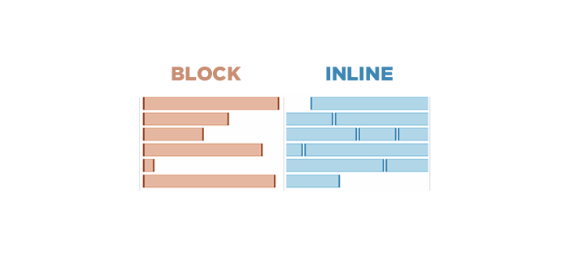

Блокові елементи є фундаментальними у веб-дизайні, оскільки вони допомагають нам організовувати контент на сторінці в чітку і логічну структуру. Вони важливі для визначення макету веб-сайту, дозволяючи нам розділити контент на зрозумілі та візуально відокремлені блоки.
Блокові елементи в HTML - це ті елементи, які автоматично починаються з нового рядка на веб-сторінці та розтягуються на всю доступну ширину контейнера. Ми використовуємо блокові елементи для створення основних структурних частин веб-сторінки, таких як заголовки, параграфи та розділи.
Інлайнові елементи в HTML - це ті елементи, які відображаються у межах поточного рядка тексту, не викликаючи автоматичного переносу на новий рядок. Ми використовуємо інлайнові елементи для внесення змін в окремі частини тексту, такі як виділення, зміна кольору, вставка посилань, без порушення загальної структури текстового потоку.
Інлайнові елементи ідеально підходять для розміщення в тексті коротких фрагментів, що вимагають особливого форматування або функціональності, таких як гіперпосилання, сильний акцент або текстові відзначення. Вони допомагають нам робити текст більш інтерактивним і візуально привабливим, не змінюючи його основної структури.

Висновок: Normalize.css - зберігає корисні за замовчуванням стилі, допомагає визначити де знаходяться різні елементи, що в свою чергу позбавляє необхідності перевизначати повторно стилі.